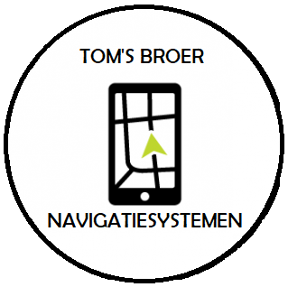

|

Indoor navigatiesysteem
Denkt u eens aan de volgende situatie. U heeft een afspraak, parkeert de auto en loopt een groot gebouw binnen. Dan, zoals altijd loopt u de ene gang in en de andere weer uit, omdat het voor u onbekend terrein is. Herkent u dit? Dan is de indoor navigatie wat voor u!

Producten
Navigaties
Smartphones bieden een gratis navigatie-app aan, maar een navigatiesysteem biedt nog veel meer, zoals batterijbesparing en een eenvoudige bevestiging. Navigatiesystemen zijn gemaakt voor één doel en zijn daarom het beste in wat ze doen.
Navigatie-apps
Tom's Broer navigatie mobile is de navigatie-app met kaarten die je de weg wijzen op terreinen. Met de navigatie app wordt het navigeren een stuk gemakkelijker. Zo kan je van te voren een reis plannen op op je telefoon plannen en deze vervolgens naar je navigatiesysteem sturen. Ook heb je de navigatie altijd bij de hand.
Features
Naast indoor navigatiesystemen wilt Tom's Broer ook navigatiestystemen aanbieden voor op terreinen en evenementen. Hierbij wilt Tom's Broer een app ontwikkelen met een navigatiesysteem. Hierbij kan je denken aan een terreinn, zoals een attracktiepark. Waarbij je op de app de wachtijden kunt zien of waar eet- en drinkgelegenheden liggen. Maar ook andere gebruiksgebieden, zoals musea, casino's, winkels en winkelcentrums.

Visie en missie
Visie
‘Het leven van mensen te verbeteren door navigatie van een niet-verdwalen oplossing in een echte reisgenoot, dat mensen van de ene plaats naar de andere plaats veiliger, sneller, goedkoper en beter geïnformeerd maakt’.
Missie
'Technologie zo gebruiksvriendelijk te maken, zodat iedereen ervan kan profiteren’

Over Ons
Tom's Broer is een net opgestart bedrijf. Het bedrijf heeft een eenvoudig te gebruiken navigatiesysteem gemaakt voor in gebouwen en terreinen/evenementen, waarbij je nooit meer zult verdwalen. Dit helpt je om gemakkelijk producten,winkels, promoties en Points of Interest te vinden op een terrein. Dit leidt tot tijdswinst en gemak. Tom's Broer is tevens ook het eerste bedrijf die deze navigatiesystemen als eerste op de markt zet.
Contact
Tom's Broer hoofdkantoor
Groenelaan 74
3568AY Amsterdam
Nederland
info@tomsbroernavigatie.com
045 - 3746384
www.tomsbroernavigatiesystemen.com
Openingstijden: maandag t/m vrijdag
8:00 - 17:00 uur
Gesloten: zaterdag en zondag